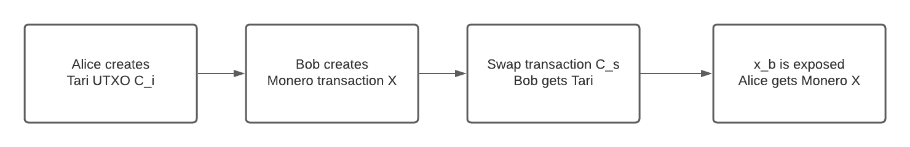
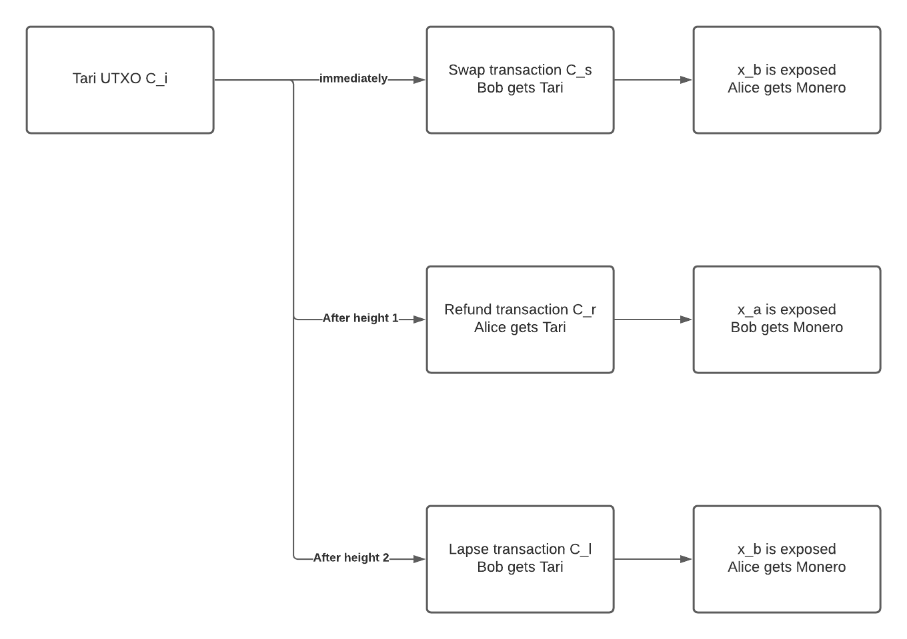

RFC-0241/XMR Atomic Swap

Maintainer(s): S W van Heerden
Licence
Copyright 2021 The Tari Development Community
Redistribution and use in source and binary forms, with or without modification, are permitted provided that the following conditions are met:
- Redistributions of this document must retain the above copyright notice, this list of conditions and the following disclaimer.
- Redistributions in binary form must reproduce the above copyright notice, this list of conditions and the following disclaimer in the documentation and/or other materials provided with the distribution.
- Neither the name of the copyright holder nor the names of its contributors may be used to endorse or promote products derived from this software without specific prior written permission.
THIS DOCUMENT IS PROVIDED BY THE COPYRIGHT HOLDERS AND CONTRIBUTORS "AS IS", AND ANY EXPRESS OR IMPLIED WARRANTIES, INCLUDING, BUT NOT LIMITED TO, THE IMPLIED WARRANTIES OF MERCHANTABILITY AND FITNESS FOR A PARTICULAR PURPOSE ARE DISCLAIMED. IN NO EVENT SHALL THE COPYRIGHT HOLDER OR CONTRIBUTORS BE LIABLE FOR ANY DIRECT, INDIRECT, INCIDENTAL, SPECIAL, EXEMPLARY OR CONSEQUENTIAL DAMAGES (INCLUDING, BUT NOT LIMITED TO, PROCUREMENT OF SUBSTITUTE GOODS OR SERVICES; LOSS OF USE, DATA OR PROFITS; OR BUSINESS INTERRUPTION) HOWEVER CAUSED AND ON ANY THEORY OF LIABILITY, WHETHER IN CONTRACT, STRICT LIABILITY OR TORT (INCLUDING NEGLIGENCE OR OTHERWISE) ARISING IN ANY WAY OUT OF THE USE OF THIS SOFTWARE, EVEN IF ADVISED OF THE POSSIBILITY OF SUCH DAMAGE.
Language
The keywords "MUST", "MUST NOT", "REQUIRED", "SHALL", "SHALL NOT", "SHOULD", "SHOULD NOT", "RECOMMENDED", "NOT RECOMMENDED", "MAY" and "OPTIONAL" in this document are to be interpreted as described in BCP 14 (covering RFC2119 and RFC8174) when, and only when, they appear in all capitals, as shown here.
Disclaimer
This document and its content are intended for information purposes only and may be subject to change or update without notice.
This document may include preliminary concepts that may or may not be in the process of being developed by the Tari community. The release of this document is intended solely for review and discussion by the community of the technological merits of the potential system outlined herein.
Goals
This Request for Comment (RFC) aims to describe how an Atomic swap between Tari and Monero will be created.
Related Requests for Comment
$$ \newcommand{\script}{\alpha} % utxo script \newcommand{\input}{ \theta } \newcommand{\cat}{\Vert} \newcommand{\so}{\gamma} % script offset \newcommand{\hash}[1]{\mathrm{H}\bigl({#1}\bigr)} $$
Comments
Any comments, changes or questions to this PR can be made in one of the following ways:
- Join the discussion on the Github discussion page.
- Create a new PR on the Tari project Github pull requests.
- Create a new issue on the Tari project Github issues.
Description
Doing atomic swaps with Monero is more complicated and requires a cryptographic dance to complete as Monero does not implement any form of HTLC's or the like. This means that when doing an atomic swap with Monero, most of the logic will have to be implemented on the Tari side. Atomic swaps between Monero and Bitcoin have been implemented by the Farcaster project and the Comit team. Due to the how TariScript works, we have a few advantages over Bitcoin script regarding adaptor signatures, as the script key was explicitly designed with scriptless scripts in mind.
Method
The primary, happy path outline of a Tari - Monero atomic swap is described here, and more detail will follow. We assume that Alice wants to trade her XTR for Bob's XMR.
- Negotiation - Both parties negotiate the value and other details of the Monero and Tari UTXO's.
- Commitment - Both parties commit to the keys, nonces, inputs, and outputs to use for the transaction.
- XTR payment - Alice makes the XTR payment to a UTXO containing a "special" script described below.
- XMR Payment - The Monero payment is made to a multiparty scriptless script UTXO.
- Claim XTR - Bob redeems the XTR, and in doing so, reveals the XMR private key to Alice only.
- Claim XMR - Alice may claim the XMR using the revealed key.
Please take note of the notation used in TariScript and specifically notation used on the signatures on the transaction inputs and on the signatures on the transaction outputs. We will note other notations in the Notation section.
TL;DR
The scheme revolves around Alice, who wants to exchange her Tari for Bob's Monero. Because they don't trust each other, they have to commit some information to do the exchange. And if something goes wrong here, we want to ensure that we can refund both parties either in Monero or Tari.
How this works is that Alice and Bob create a shared output on both chains. The Monero output is a simple aggregate key to unlock the UTXO, while multiple keys are needed to unlock the Tari UTXO. An aggregate key locks this Monero UTXO that neither Alice nor Bob knows, but they both know half of the key. The current Tari block height determines the unlocking key for the Tari UTXO.
The process is started by Alice and Bob exchanging and committing to some information. Alice is the first to publish a transaction, which creates the Tari UTXO. If Bob is happy that the Tari UTXO has been mined and verifies all the information, he will publish a transaction to create the Monero UTXO.
The TariScript script on the UTXO ensures that they will have to reveal their portion of the Monero key when either Alice or Bob spends this. This disclosure allows the other party to claim the Monero by being the only one to own the complete Monero aggregate key.
We can visualize the happy path flow with the image below. 
The script will ensure that at any point in time, at least someone can claim the Tari UTXO, and if that person does so, the other party can claim the Monero UTXO by looking at the spending data. It has two lock heights, determining who can claim the Tari UTXO if the happy path fails. Before the first lock height, only Bob can claim the Tari; we call this the swap transaction.
If Bob disappears after Alice has posted the Tari UTXO, Alice can claim the Tari after the first lock height and before the second lock height; we call this the refund transaction. It ensures that Alice can reclaim her Tari if Bob disappears, and if Bob reappears, he can reclaim his Monero.
That leaves us with the scenario where Alice disappears after Bob posts the Monero transaction, in which case we need to protect Bob. After the second lock height, only Bob can claim the Tari; we call this the lapse transaction. The lapse transaction will reveal Bob's Monero key so that if Alice reappears, she can claim the Monero.
The image below details the time flow of the Tari transactions spending the Tari UTXO. 
Heights, Security, and other considerations
We need to consider a few things for this to be secure, as there are possible scenarios that can reduce the security in the atomic swap.
When looking at the two lock heights, the first lock height should be sufficiently large enough to give ample time for Alice to post the Tari UTXO transaction and for it to be mined with a safe number of confirmations, and for Bob to post the Monero transaction and for it to be mined with a safe number of confirmations. The second lock height should give ample time for Alice after the first lock height to re-claim her Tari. Larger heights here might make refunds slower, but it should be safer in giving more time to finalize this.
Allowing both to claim the Tari after the second lock height is, on face value, a safer option. This can be done by enabling either party to claim the script with the lapse transaction. The counterparty can then claim the Monero. However, this will open up an attack vector to enable either party to claim the Monero while claiming the Tari. Either party could trivially pull off such a scheme by performing a front-running attack and having a bit of luck. The counterparty monitors all broadcast transactions to base nodes. Upon identifying the lapse transaction, they do two things; in quick succession, broadcast their lapse transaction and the transaction to claim the Monero, both with sufficiently high fees. Base nodes will prefer to mine transactions with the higher fees, and thus the counterparty can walk away with both the Tari and the Monero.
It is also possible to prevent the transaction from being mined after being submitted to the mempool. This can be caused by a combination of a too busy network, not enough fees, or a too-small period in the time locks. When one of these atomic swap transactions gets published to a mempool, we effectively already have all the details exposed. For the atomic swaps, it means we already revealed part of the Monero key, although the actual Tari transaction has not been mined. But this is true for any HTLC or like script on any blockchain. But in the odd chance that this does happen whereby the fees are too little and time locks not enough, it should be possible to do a child-pays-for-parent transaction to bump up the fees on the transaction to get it mined and confirmed.
Key construction
Using multi-signatures with Schnorr signatures, we need to ensure that the keys are constructed so that key cancellation attacks are not possible. To do this, we create new keys from the chosen public keys \(K_a'\) and \(K_b'\)
$$ \begin{aligned} K_a &= \hash{\hash{K_a' \cat K_b'} \cat K_a' } * K_a' \\ k_a &= \hash{\hash{K_a' \cat K_b'} \cat K_a' } * k_a' \\ K_b &= \hash{\hash{K_a' \cat K_b'} \cat K_b' } * K_b' \\ k_b &= \hash{\hash{K_a' \cat K_b'} \cat K_b' } * k_b' \\ \end{aligned} \tag{1} $$
Key equivalence
Monero uses Ed25519, while Tari uses Ristretto as its curve of choice. While Ristretto and Ed25519 both works on Curve25519 and the Edward points are the same, they differ when the points are encoded. In practice, this means the following:
$$ \begin{aligned} Xm &= x \cdot G_m \\ X &= x \cdot G \\ X &\neq X_m \\ \end{aligned} \tag{2} $$
To use public keys across different implementations or curves, we must prove that the same private key created the "different" public keys. Because we exchange encoded points, we need some way of proving they are the same. Jepsen designed a proof to prove Discrete Logarithm Equality (DLEQ) between two generator groups. But the proof here is not created for Elliptic Curve Cryptography (ECC) but can be adapted to ECC by:
$$ \begin{aligned} e &= \hash{K_1 \cat K_2 \cat R_{1} \cat R_{2}} \\ s &= r + e(k) \\ R_{1} &= r \cdot G \\ R_{2} &= r \cdot G_m \\ K_{1} &= k \cdot G \\ K_{2} &= k \cdot G_m \\ \end{aligned} \tag{3} $$
The verification is then: $$ \begin{aligned} e &= \hash{K_1 \cat K_2 \cat R_{1} \cat R_{2}} \\ s \cdot G &= R_{1} + e(K_1) \\ s \cdot G_m &= R_{2} + e(K_2) \\ \end{aligned} \tag{4} $$
But this method has a problem with ECC keys as they are always used as \(mod(n)\) where n is the group size. With ECC, we cannot always use the method; it can only be used when the two curves are of the same group size \(n\), or \(s < n\). If this is not the case, a bit comparison needs to be created to prove this. But luckily, we use Ristretto and Ed25519, both on Curve25519, because it’s the same curve, same generator point, and just different encodings. We can use this proof to know even though the encoded public keys do not match, they still share a private key
Key security
The risk of publicly exposing part of the Monero private key is still secure because of how ECC works. We can add two secret keys together and share the public version of both. And at the same time, we know that no one can calculate the secret key with just one part.
$$ \begin{aligned} (k_a + k_b) \cdot G &= k_a \cdot G + k_b \cdot G\\ (k_a + k_b) \cdot G &= K_a + K_b \\ (k_a + k_b) \cdot G &= K \\ \end{aligned} \tag{5} $$
We know that \(K\), \(K_a\), \(K_b\) are public. While \(k\), \(k_a\), \(k_b\) are all private.
But if we expose \(k_b\), we can try to do the following: $$ \begin{aligned} (k_a + k_b) \cdot G &= K_a + K_b\\ k_a \cdot G &= (K_a + K_b - k_b \cdot G) \\ k_a \cdot G &= K_a \\ \end{aligned} \tag{6} $$
However, this is the Elliptic-Curve Discrete Logarithm Problem, and there is no easy solution to solve this on current computer hardware. Thus this is still secure even though we leaked part of the secret key \(k\).
Method 1
Detail
This method relies purely on TariScript to enforce the exposure of the private Monero aggregate keys. Based on Point Time Lock Contracts, the script forces the spending party to supply their Monero
private key part as input data to the script, evaluated via the operation ToRistrettoPoint. This TariScript operation will
publicly reveal part of the aggregated Monero private key, but this is still secure: see Key security.
The simplicity of this method lies therein that the spending party creates all transactions on their own. Bob requires a pre-image from Alice to complete the swap transaction; Alice needs to verify that Bob published the Monero transaction and that everything is complete as they have agreed. If she is happy, she will provide Bob with the pre-image to claim the Tari UTXO.
TariScript
The Script used for the Tari UTXO is as follows:
ToRistrettoPoint
CheckHeight(height_1)
LtZero
IFTHEN
PushPubkey(X_b)
EqualVerify
HashSha256
PushHash(HASH256{pre_image})
EqualVerify
PushPubkey(K_{Sb})
Else
CheckHeight(height_2)
LtZero
IFTHEN
PushPubkey(X_a)
EqualVerify
PushPubkey(K_{Sa})
Else
PushPubkey(X_b)
EqualVerify
PushPubkey(K_{Sb})
ENDIF
ENDIF
Before height_1, Bob can claim the Tari UTXO by supplying pre_image and his private Monero key part x_b. After
height_1 but before height_2, Alice can claim the Tari UTXO by supplying her private Monero key part x_a. After
height_2, Bob can claim the Tari UTXO by providing his private Monero key part x_b.
Negotiation
Alice and Bob have to negotiate the exchange rate and the amount exchanged in the atomic swap. They also need to decide how the two UTXO's will look on the blockchain. To accomplish this, the following needs to be finalized:
- Amount of Tari to swap for the amount of Monero
- Monero public key parts \(Xm_a\), \(Xm_b\) ,and its aggregate form \(Xm\)
- DLEQ proof of \(Xm_a\) and \(X_a\)
- Tari script key parts \(K_{Sa}\), \(K_{Sb}\)
- The TariScript to be used in the Tari UTXO
- The blinding factor \(k_i\) for the Tari UTXO, which can be a Diffie-Hellman between their Tari addresses.
Key selection
Using (1), we create the Monero keys as they are multi-party aggregate keys. The Monero key parts for Alice and Bob is constructed as follows:
$$ \begin{aligned} Xm_a' &= xm_a' \cdot G_m \\ Xm_b' &= xm_b' \cdot G_m \\ xm_a &= \hash{\hash{Xm_a' \cat Xm_b'} \cat Xm_a' } * xm_a' \\ xm_b &= \hash{\hash{Xm_a' \cat Xm_b'} \cat Xm_b' } * xm_b' \\ xm_a &= x_a \\ xm_b &= x_b \\ Xm_a &= \hash{\hash{Xm_a' \cat Xm_b'} \cat Xm_a' } * Xm_a' \\ Xm_b &= \hash{\hash{Xm_a' \cat Xm_b'} \cat Xm_b' } * Xm_b' \\ xm &= xm_a + xm_b + k_i \\ Xm &= Xm_a + Xm_b + k_i \cdot G_m\\ x &= x_a + x_b + k_i \\ X &= X_a + X_b + k_i \cdot G\\ \end{aligned} \tag{7} $$
Commitment phase
This phase allows Alice and Bob to commit to using their keys.
Starting values
Alice needs to provide Bob with the following:
- Script public key: \( K_{Sa}\)
- Monero public key \( Xm_a'\) with Ristretto encoding
Bob needs to provide Alice with the following:
- Script public key: \( K_{Sb}\)
- Monero public key \( Xm_b'\) with Ristretto encoding
Using the above equations in (7), Alice and Bob can calculate \(Xm\), \(Xm_a\), \(Xm_b\)
DLEQ proof
Alice needs to provide Bob with:
- Monero public key \(X_a\) encoding on Ristretto
- DLEQ proof for \(Xm_a\) and \(X_a\): \((R_{ZTa}, R_{ZMa}, s_{Za})\)
$$ \begin{aligned} e &= \hash{X_a \cat Xm_a \cat R_{ZTa} \cat R_{ZMa}} \\ s_{Za} &= r + e(x_a) \\ R_{ZTa} &= r \cdot G \\ R_{ZMa} &= r \cdot G_m \\ \end{aligned} \tag{8} $$
Bob needs to provide Alice with:
- Monero public key \(X_b\) encoding on Ristretto
- DLEQ proof for \(Xm_b\) and \(X_b\): \((R_{ZTb}, R_{ZMb}, s_{Zb})\)
$$ \begin{aligned} e &= \hash{X_b \cat Xm_b \cat R_{ZTb} \cat R_{ZMb}} \\ s_{Za} &= r + e(x_b) \\ R_{ZTa} &= r \cdot G \\ R_{ZMa} &= r \cdot G_m \\ \end{aligned} \tag{9} $$
Alice needs to verify Bob's DLEQ proof with:
$$ \begin{aligned} e &= \hash{X_b \cat Xm_b \cat R_{ZTb} \cat R_{ZMb}} \\ s_{Zb} \cdot G &= R_{ZTb} + e(X_b) \\ s_{Zb} \cdot G_m &= R_{ZMb} + e(Xm_b) \\ \end{aligned} \tag{10} $$
Bob needs to verify Alice's DLEQ proof with:
$$ \begin{aligned} e &= \hash{X_a \cat Xm_a \cat R_{ZTa} \cat R_{ZMa}} \\ s_{Za} \cdot G &= R_{ZTa} + e(X_a) \\ s_{Za} \cdot G_m &= R_{ZMa} + e(Xm_a) \\ \end{aligned} \tag{11} $$
XTR payment
Alice will construct the Tari UTXO with the correct script and publish the containing transaction to the blockchain, knowing that she can reclaim her Tari if Bob vanishes or tries to break the agreement. This is done with standard Mimblewimble rules and signatures.
XMR payment
When Bob sees that the Tari UTXO that Alice created is mined on the Tari blockchain with the correct script, Bob can publish the Monero transaction containing the Monero UTXO with the aggregate key \(Xm = Xm_a + Xm_b + k_i \cdot G_m \).
Claim XTR
When Alice sees that the Monero UTXO that Bob created is mined on the Monero blockchain containing the correct aggregate
key \(Xm\), she can provide Bob with the required pre_image to spend the Tari UTXO. She does not have the
missing key \(xm_b \) to claim the Monero yet, but it will be revealed when Bob claims the Tari.
Bob can now supply the pre_image and his Monero private key as transaction input to unlock the script.
Claim XMR
Alice can now see that Bob spent the Tari UTXO, and by examining the input_data required to satisfy the script, she
can learn Bob's secret Monero key. Although this private key \( xm_b \) is now public knowledge, her part of the Monero spend key
is still private, and thus only she knows the complete Monero spend key. She can use this knowledge to claim the Monero
UTXO.
The refund
If something goes wrong and Bob never publishes the Monero or disappears, Alice needs to wait for the lock height
height_1 to pass. This will allow her to reclaim her Tari, but in doing so, she needs to publish her Monero secret key
as input to the script to unlock the Tari. When Bob comes back online, he can use this public knowledge to reclaim his
Monero, as only he knows both parts of the Monero UTXO spend key.
The lapse transaction
If something goes wrong and Alice never gives Bob the required pre_image, Bob needs to wait for the lock height
height_2 to pass. This will allow him to claim the Tari he wanted all along, but in doing so, he needs to publish
his Monero secret key as input to the script to unlock the Tari. When Alice comes back online, she can use this public
knowledge to claim the Monero she wanted all along as only she now knows both parts of the Monero UTXO spend key.
Method 2
Detail
This method is based on work by the Farcaster project and the Comit team. It utilizes adapter signatures and multi-party commitment signatures to ensure that the spending party leaks their private Monero key part. Because all keys are aggregates keys, we need to ensure that the refund and lapse transactions are negotiated and signed before Alice publishes the Tari UTXO. This will allow either Alice or Bob to claim the refund and lapse transactions, respectively, without the other party being online.
TariScript
The Script used for the Tari UTXO is as follows:
CheckHeight(height_1)
LtZero
IFTHEN
PushPubkey(K_{Ss})
Else
CheckHeight(height_2)
LtZero
IFTHEN
PushPubkey(K_{Sr})
Else
PushPubkey(K_{Sl})
ENDIF
ENDIF
Before height_1, Bob can claim the Tari UTXO if Alice gives him the correct signature to complete the transaction.
After height_1 but before height_2, Alice can claim the Tari UTXO. After height_2, Bob can claim the Tari UTXO.
Negotiation
Alice and Bob have to negotiate the exchange rate and the amount exchanged in the atomic swap. They also need to decide how the two UTXO's will look on the blockchain. To accomplish this, the following needs to be finalized:
- Amount of Tari to swap for the amount of Monero
- Monero public key parts \(Xm_a\), \(Xm_b\), and its aggregate form \(X\)
- Tari script key parts \(K_{Ssa}\), \(K_{Ssb}\), and its aggregate form \(K_{Ss}\) for the swap transaction
- Tari script key parts \(K_{Sra}\), \(K_{Srb}\), and its aggregate form \(K_{Sr}\) for the refund transaction
- Tari script key parts \(K_{Sla}\), \(K_{Slb}\), and its aggregate form \(K_{Sl}\) for the lapse transaction
- Tari sender offset key parts \(K_{Osa}\), \(K_{Osb}\), and its aggregate form \(K_{Os}\) for the swap transaction
- Tari sender offset key parts \(K_{Ora}\), \(K_{Orb}\), and its aggregate form \(K_{Or}\) for the refund transaction
- Tari sender offset key parts \(K_{Ola}\), \(K_{Olb}\), and its aggregate form \(K_{Ol}\) for the lapse transaction
- All of the nonces used in the script signature creation and Metadata signature for the swap, refund, and lapse transactions
- The script offset used in both the swap, refund, and lapse transactions
- The TariScript to be used in the Tari UTXO
- The blinding factor \(k_i\) for the Tari UTXO, which can be a Diffie-Hellman between their addresses.
Key selection
Using (1), we create the Monero keys as they are multi-party aggregate keys.
The script key parts for Alice and Bob is constructed as follows:
$$ \begin{aligned} k_{Ssa} &= \hash{\hash{K_{Ssa}' \cat K_{Ssb}'} \cat K_{Ssa}' } * k_{Ssa}' \\ k_{Ssb} &= \hash{\hash{K_{Ssa}' \cat K_{Ssb}'} \cat K_{Ssb}' } * k_{Ssb}' \\ k_{Ss} &= k_{Ssa} + k_{sb} \\ k_{Sra} &= \hash{\hash{K_{Sra}' \cat K_{Srb}'} \cat K_{Sra}' } * k_{Sra}' \\ k_{Srb} &= \hash{\hash{K_{Sra}' \cat K_{Srb}'} \cat K_{Srb}' } * k_{Srb}' \\ k_{Sr} &= k_{Sra} + k_{Srb} \\ k_{Sla} &= \hash{\hash{K_{Sla}' \cat K_{Slb}'} \cat K_{Sla}' } * k_{Sla}' \\ k_{Slb} &= \hash{\hash{K_{Sla}' \cat K_{Slb}'} \cat K_{Slb}' } * k_{Slb}' \\ k_{Sl} &= k_{Sla} + k_{Slb} \\ \end{aligned} \tag{12} $$
The sender offset key parts for Alice and Bob is constructed as follows:
$$ \begin{aligned} k_{Osa} &= \hash{\hash{K_{Osa}' \cat K_{Osb}'} \cat K_{Osa}' } * k_{Osa}' \\ k_{Osb} &= \hash{\hash{K_{Osa}' \cat K_{Osb}'} \cat K_{Osb}' } * k_{Osb}' \\ k_{Os} &= k_{Osa} + k_{Ssb} \\ k_{Ora} &= \hash{\hash{K_{Ora}' \cat K_{Orb}'} \cat K_{Ora}' } * k_{Ora}' \\ k_{Orb} &= \hash{\hash{K_{Ora}' \cat K_{Orb}'} \cat K_{Orb}' } * k_{Orb}' \\ k_{Or} &= k_{Ora} + k_{Srb} \\ k_{Ola} &= \hash{\hash{K_{Ola}' \cat K_{Olb}'} \cat K_{Ola}' } * k_{Ola}' \\ k_{Olb} &= \hash{\hash{K_{Ola}' \cat K_{Olb}'} \cat K_{Olb}' } * k_{Olb}' \\ k_{Ol} &= k_{Ola} + k_{Slb} \\ \end{aligned} \tag{13} $$
The Monero key parts for Alice and Bob is constructed as follows:
$$ \begin{aligned} xm_a' &= x_a' \\ xm_b' &= x_b' \\ Xm_a' &= x_a' \cdot G_m \\ Xm_b' &= x_b' \cdot G_m \\ X_a' &= x_a' \cdot G \\ X_b' &= x_b' \cdot G \\ x_a &= \hash{\hash{X_a' \cat X_b'} \cat X_a' } * x_a' \\ x_b &= \hash{\hash{X_a' \cat X_b'} \cat X_b' } * x_b' \\ x &= x_a + x_b + k_i \\ Xm &= Xm_a + Xm_b + k_i \cdot G_m \\ X &= X_a + X_b + k_i \cdot G\\ \end{aligned} \tag{14} $$
Commitment phase
Similar to method 1, this phase allows Alice and Bob to commit to using their keys and requires more than one round to complete. Some of the information that needs to be committed depends on previous knowledge.
Starting values
Alice needs to provide Bob with the following:
- Output commitment \(C_r\) of the refund transaction's output
- Output features \( F_r\) of the refund transaction's output
- Output script \( \script_r\) of the refund transaction's output
- Output commitment \(C_l\) of the lapse transaction's output
- Output features \( F_l\) of the lapse transaction's output
- Output script \( \script_l\) of the lapse transaction's output
- Public keys: \( K_{Ssa}'\), \( K_{Sra}'\), \( K_{Sla}'\), \( K_{Osa}'\), \( K_{Ora}'\), \( K_{Ola}'\), \( X_a'\)
- Nonces: \( R_{Ssa}\), \( R_{Sra}\), \( R_{Sla}\), \( R_{Msa}\), \( R_{Mra}\), \( R_{Mla}\)
Bob needs to provide Alice with the following:
- Output commitment \(C_s\) of the swap transaction's output
- Output features \( F_s\) of the swap transaction's output
- Output script \( \script_s\) of the swap transaction's output
- Public keys: \( K_{Ssb}'\), \( K_{Srb}'\), \( K_{Slb}'\), \( K_{Osb}'\), \( K_{Orb}'\), \( K_{Olb}'\), \( X_b'\)
- Nonces: \( R_{Ssb}\), \( R_{Srb}\), \( R_{Slb}\), \( R_{Msb}\), \( R_{Mrb}\), \( R_{Mlb}\)
After Alice and Bob have exchanged the variables, they start trading calculated values.
Construct adaptor signatures and DLEQ proofs
Alice needs to provide Bob with the following values:
- Adaptor signature part \(b_{Sra}'\) for \(b_{Sra}\)
- Signature part \(a_{Sra}\)
- Monero public key \(X_a\) encoded with Ristretto
- Monero public key \(Xm_a\) encoded with ed25519
- DLEQ proof for \(Xm_a\) and \(X_a\): \((R_{ZTa}, R_{ZMa}, s_{Za})\)
Alice constructs the adaptor signature of the input script signature parts for the refund transaction ( \(a_{Sra}\) and \(b_{Sra}'\) ) with:
$$ \begin{aligned} a_{Sra} &= r_{Sra_a} + e_r(v_{i}) \\ b_{Sra}' &= r_{Sra_b} + e_r(k_{Sra}+k_i) \\ e_r &= \hash{ (R_{Sr} + (X_a)) \cat \alpha_r \cat \input_r \cat (K_{Sra} + K_{Srb}) \cat C_i} \\ R_{Sr} &= r_{Sra_a} \cdot H + r_{Sra_b} \cdot G + R_{Srb} \\ X_a &= x_a \cdot G \\ \end{aligned} \tag{15} $$
Alice constructs the DLEQ proof:
$$ \begin{aligned} e &= \hash{X_a \cat Xm_a \cat R_{ZTa} \cat R_{ZMa}} \\ s_{Za} &= r + e(x_a) \\ R_{ZTa} &= r \cdot G \\ R_{ZMa} &= r \cdot G_m \\ \end{aligned} \tag{16} $$
Bob needs to provide Alice with the following values:
- Adaptor signature part \(b_{Ssb}'\) for \(b_{Ssb}\)
- Signature part \(a_{Ssb}\)
- Adaptor signature part \(b_{Slb}'\) for \(b_{Slb}\)
- Signature part \(a_{Slb}\)
- Monero public key \(X_b\) encoded with Ristretto
- Monero public key \(Xm_b\) encoded with ed25519
- DLEQ proof for \(Xm_b\) and \(X_b\): \((R_{ZTb}, R_{ZMb}, s_{Zb})\)
Bob constructs the adaptor signatures of the input script signature parts for the swap transaction ( \(a_{Ssb}\), \(b_{Ssb}'\) ) and the lapse transaction ( \(a_{Slb}\) and \(b_{Slb}'\) ) with
$$ \begin{aligned} a_{Ssb} &= r_{Ssb_a} + e_s(v_{i}) \\ b_{Ssb}' &= r_{Ssb_b} + e_s(k_{Ssb}+k_i) \\ e_s &= \hash{ (R_{Sr} + (X_b)) \cat \alpha_i \cat \input_i \cat (K_{Ssa} + K_{Ssb}) \cat C_i} \\ R_{Ss} &= r_{Ssb_a} \cdot H + r_{Ssb_b} \cdot G + R_{Ssa} \\ a_{Slb} &= r_{Slb_a} + e_l(v_{i}) \\ b_{Slb}' &= r_{Slb_b} + e_l(k_{Slb}+k_i) \\ e_l &= \hash{ (R_{Sl} + (X_b)) \cat \alpha_i \cat \input_i \cat (K_{Sla} + K_{Slb}) \cat C_i} \\ R_{Sl} &= r_{Slb_a} \cdot H + r_{Slb_b} \cdot G + R_{Sla} \\ X_b &= x_b \cdot G \\ \end{aligned} \tag{17} $$
Bob constructs the DLEQ proof:
$$ \begin{aligned} e &= \hash{X_b \cat Xm_b \cat R_{ZTb} \cat R_{ZMb}} \\ s_{Zb} &= r + e(x_b) \\ R_{ZTb} &= r \cdot G \\ R_{ZMb} &= r \cdot G_m \\ \end{aligned} \tag{18} $$
Verify adaptor signatures and DLEQ proofs
Alice needs to verify Bob's adaptor signatures with:
$$ \begin{aligned} a_{Ssb} \cdot H + b_{Ssb}' \cdot G &= R_{Ssb} + (C_i+K_{Ssb})*e_s \\ a_{Slb} \cdot H + b_{Slb}' \cdot G &= R_{Slb} + (C_i+K_{Slb})*e_l \\ \end{aligned} \tag{19} $$
Alice needs to verify Bob's Monero public keys using the zero-knowledge proof:
$$ \begin{aligned} e &= \hash{X_b \cat Xm_b \cat R_{ZTb} \cat R_{ZMb}} \\ s_{Zb} \cdot G &= R_{ZTb} + e(X_b) \\ s_{Zb} \cdot G_m &= R_{ZMb} + e(Xm_b) \\ \end{aligned} \tag{20} $$
Bob needs to verify Alice's adaptor signature with:
$$ \begin{aligned} a_{Sra} \cdot H + b_{Sra}' \cdot G &= R_{Sra} + (C_i+K_{Sra})*e_r \\ \end{aligned} \tag{21} $$
Bob needs to verify Alice's Monero public keys using the zero-knowledge proof:
$$ \begin{aligned} e &= \hash{X_a \cat XM_a \cat R_{ZTa} \cat R_{ZMa}} \\ s_{Za} \cdot G &= R_{ZTa} + e(X_a) \\ s_{Za} \cdot G_m &= R_{ZMa} + e(Xm_a) \\ \end{aligned} \tag{22} $$
Swap out refund and lapse transactions
If Alice and Bob are happy with the verification, they need to swap out refund and lapse transactions.
Alice needs to provide Bob with the following:
- Input script signature for lapse transaction (\( (a_{Sla}, b_{Sla}), R_{Sla}\) )
- Output metadata signature for lapse transaction (\( b_{Mla}, R_{Mla}\) )
- Script offset for lapse transaction \( \so_{la} \)
Alice constructs for the lapse transaction signatures. $$ \begin{aligned} a_{Sla} &= r_{Sla_a} + e_l(v_{i}) \\ b_{Sla} &= r_{Sla_b} + e_l(k_{Sla}) \\ e_l &= \hash{ (R_{Sl} + (X_b)) \cat \alpha_i \cat \input_i \cat (K_{Sla} + K_{Slb}) \cat C_i} \\ R_{Sl} &= r_{Sla_a} \cdot H + r_{Sla_b} \cdot G + R_{Slb}\\ b_{Mla} &= r_{Mla_b} + e(k_{Ola}) \\ R_{Mla} &= b_{Mla} \cdot G \\ e &= \hash{ (R_{Mla} + R_{Mlb}) \cat \script_l \cat F_l \cat (K_{Ola} + K_{Olb}) \cat C_l} \\ \so_{la} &= k_{Sla} - k_{Ola} \\ \end{aligned} \tag{23} $$
Bob needs to provide Alice with the following:
- Input script signature for refund transaction (\( (a_{Srb}, b_{Srb}), R_{Srb}\) )
- Output metadata signature for refund transaction (\( b_{Mrb}, R_{Mrb}\) )
- Script offset for refund transaction \( \so_{rb} \)
Bob constructs for the refund transaction signatures. $$ \begin{aligned} a_{Srb} &= r_{Srb_a} + e_r(v_{i}) \\ b_{Srb} &= r_{Srb_b} + e_r(k_{Srb}) \\ e_r &= \hash{ (R_{Sr} + (X_a)) \cat \alpha_i \cat \input_i \cat (K_{Sra} + K_{Srb}) \cat C_i} \\ R_{Sl} &= r_{Srb_a} \cdot H + r_{Srb_b} \cdot G + R_{Sra}\\ b_{Mrb} &= r_{Mrb_b} + e(k_{Orb}) \\ R_{Mrb} &= b_{Mrb} \cdot G \\ e &= \hash{ (R_{Mra} + R_{Mrb}) \cat \script_r \cat F_r \cat (K_{Ora} + K_{Orb}) \cat C_r} \\ \so_{rb} &= k_{Srb} - k_{Orb} \\ \end{aligned} \tag{24} $$
Although the script validation on output \(C_i\) will not pass due to the lock height, both Alice and Bob need to verify that the total aggregated signatures and script offset for the refund and lapse transaction are valid should they need to publish them at a future date without the other party’s presence.
XTR payment
If Alice and Bob are happy with all the committed values, Alice will construct the Tari UTXO with the correct script and publish the containing transaction to the blockchain. Because Bob already gave her the required signatures for his part of the refund transaction, Alice can easily compute the required aggregated signatures by adding the parts together. She has all the knowledge to spend this after the lock expires.
XMR Payment
When Bob sees that the Tari UTXO that Alice created is mined on the Tari blockchain with the correct script, he can go ahead and publish the Monero UTXO with the aggregate key \(Xm = Xm_a + Xm_b \).
Claim XTR
When Alice sees that the Monero UTXO that Bob created is mined on the Monero blockchain containing the correct aggregate key \(Xm\), she can provide Bob with the following allowing him to spend the Tari UTXO:
- Script signature for the swap transaction \((a_{Ssa}\, b_{Ssa}), R_{Ssa}\)
- Metadata signature for swap transaction \((b_{Msa}, R_{Msa})\)
- Script offset for swap transaction \( \so_{sa} \)
She does not have the missing key \(x_b \) to claim the Monero yet, but it will be revealed when Bob claims the Tari.
Alice constructs for the swap transaction. $$ \begin{aligned} a_{Ssa} &= r_{Ssa_a} + e_s(v_{i}) \\ b_{Ssa} &= r_{Ssa_b} + e_s(k_{Ssa}) \\ e_s &= \hash{ (R_{Ss} + (X_b)) \cat \alpha_i \cat \input_i \cat (K_{Ssa} + K_{Ssb}) \cat C_i} \\ R_{Ss} &= r_{Ssa_a} \cdot H + r_{Ssa_b} \cdot G + R_{Ssb}\\ b_{Msa} &= r_{Msa_b} + e(k_{Osa}) \\ R_{Msa} &= b_{Msa} \cdot G \\ e &= \hash{ (R_{Msa} + R_{Msb}) \cat \script_s \cat F_s \cat (K_{Osa} + K_{Osb}) \cat C_s} \\ \so_{sa} &= k_{Ssa} - k_{Osa} \\ \end{aligned} \tag{25} $$
Bob constructs the swap transaction. $$ \begin{aligned} a_{Ssb} &= r_{Ssb_a} + e_s(v_{i}) \\ b_{Ssb} &= r_{Ssb_b} + x_b + e_s(k_{Ssb} + k_i) \\ e_s &= \hash{ (R_{Ss} + (X_b)) \cat \alpha_i \cat \input_i \cat (K_{Ssa} + K_{Ssb}) \cat C_i} \\ a_{Ss} &= a_{Ssa} + a_{Ssb} \\ b_{Ss} &= b_{Ssa} + b_{Ssb} \\ R_{Ss} &= r_{Ssa_b} \cdot H + r_{Ssb_b} \cdot G + R_{Ssa}\\ a_{Msb} &= r_{Msb_a} + e(v_{s}) \\ b_{Msb} &= r_{Msb_b} + e(k_{Osb}+k_s) \\ R_{Msb} &= a_{Msb} \cdot H + b_{Msb} \cdot G \\ e &= \hash{ (R_{Msa} + R_{Msb}) \cat \script_s \cat F_s \cat (K_{Osa} + K_{Osb}) \cat C_s} \\ R_{Ms} &= R_{Msa} + R_{Msb} \\ \so_{sb} &= k_{Ssb} - k_{Osb} \\ \so_{s} &= \so_{sa} +\so_{sb} \\ \end{aligned} \tag{26} $$
Bob's transaction now has all the required signatures to complete the transaction. He will then publish the transaction.
Claim XMR
Because Bob has now published the transaction on the Tari blockchain, Alice can calculate the missing Monero key \(x_b\) as follows:
$$ \begin{aligned} b_{Ss} &= b_{Ssa} + b_{Ssb} \\ b_{Ss} - b_{Ssa} &= b_{Ssb} \\ b_{Ssb} &= r_{Ssb_b} + x_b + e_s(k_{Ssb} + k_i) \\ b_{Ssb} - b_{Ssb}' &= r_{Ssb_b} + x_b + e_s(k_{Ssb} + k_i) -(r_{Ssb_b} + e_s(k_{Ssb}+k_i))\\ b_{Ssb} - b_{Ssb}' &= x_b \\ \end{aligned} \tag{27} $$
With \(x_b\) in hand, she can calculate \(X = x_a + x_b\), and with this, she claims the Monero.
The refund
If something goes wrong and Bob never publishes the Monero, Alice needs to wait for the lock height
height_1 to pass. This will allow her to create the refund transaction to reclaim her Tari.
Alice constructs the refund transaction with
$$ \begin{aligned} a_{Sra} &= r_{Sra_a} + e_s(v_{i}) \\ b_{Sra} &= r_{Sra_b} + x_a + e_s(k_{Sra} + k_i) \\ e_r &= \hash{ (R_{Sr} + (X_a)) \cat \alpha_i \cat \input_i \cat (K_{Sra} + K_{Srb}) \cat C_i} \\ a_{Sr} &= a_{Sra} + a_{Srb} \\ b_{Sr} &= b_{Sra} + b_{Srb} \\ R_{Sr} &= r_{Sra_a} \cdot H + r_{Sra_b} \cdot G + R_{Srb}\\ a_{Mra} &= r_{Mra_a} + e(v_{r}) \\ b_{Mra} &= r_{Mra_b} + e(k_{Ora}+k_r) \\ R_{Mra} &= a_{Mra} \cdot H + b_{Mra} \cdot G \\ e &= \hash{ (R_{Mra} + R_{Mrb}) \cat \script_s \cat F_s \cat (K_{Ora} + K_{Orb}) \cat C_r} \\ R_{Mr} &= R_{Mra} + R_{Mrb} \\ \so_{ra} &= k_{Sra} - k_{Ora} \\ \so_{r} &= \so_{ra} +\so_{rb} \\ \end{aligned} \tag{28} $$
This allows Alice to claim back her Tari, but it also exposes her Monero key \(x_a\) This means if Bob did publish the Monero UTXO, he could calculate \(X\) using: $$ \begin{aligned} b_{Sr} &= b_{Sra} + b_{Srb} \\ b_{Sr} - b_{Sra} &= b_{Sra} \\ b_{Sra} &= r_{Sra_b} + x_a + e_r(k_{Sra} + k_i) \\ b_{Sra} - b_{Sra}' &= r_{Sra_b} + x_a + e_r(k_{Sra} + k_i) -(r_{Sra_b} + e_r(k_{Sra}+k_i))\\ b_{Sra} - b_{Sra}' &= x_a \\ \end{aligned} \tag{29} $$
The lapse transaction
If something goes wrong and Alice never publishes her refund transaction, Bob needs to wait for the
lock height height_2 to pass. This will allow him to create the lapse transaction to claim the Tari.
Bob constructs the lapse transaction with $$ \begin{aligned} a_{Slb} &= r_{Slb_a} + e_l(v_{i}) \\ b_{Slb} &= r_{Slb_b} + x_b + e_l(k_{Slb} + k_i) \\ e_l &= \hash{ (R_{Sl} + (X_b)) \cat \alpha_i \cat \input_i \cat (K_{Sla} + K_{Slb}) \cat C_i} \\ a_{Sl} &= a_{Sla} + a_{Slb} \\ b_{Sl} &= b_{Sla} + b_{Slb} \\ R_{Sl} &= r_{Slb_a} \cdot H + r_{Slb_b} \cdot G + R_{Sla}\\ a_{Mlb} &= r_{Mlb_a} + e(v_{l}) \\ b_{Mlb} &= r_{Mlb_b} + e(k_{Olb}+k_l) \\ R_{Mlb} &= a_{Mlb} \cdot H + b_{Mlb} \cdot G \\ e &= \hash{ (R_{Mla} + R_{Mlb}) \cat \script_l \cat F_l \cat (K_{Ola} + K_{Olb}) \cat C_l} \\ R_{Ml} &= R_{Mla} + R_{Mlb} \\ \so_{lb} &= k_{Slb} - k_{Olb} \\ \so_{r} &= \so_{la} +\so_{lb} \\ \end{aligned} \tag{30} $$
This allows Bob to claim the Tari he originally wanted, but it also exposes his Monero key \(x_b\) This means if Alice ever comes back online, she can calculate \(X\) and claim the Monero she wanted all along using: $$ \begin{aligned} b_{Sl} &= b_{Slb} + b_{Slb} \\ b_{Sl} - b_{Slb} &= b_{Slb} \\ b_{Slb} &= r_{Slb_b} + x_a + e_r(k_{Slb} + k_i) \\ b_{Slb} - b_{Slb}' &= r_{Slb_b} + x_b + e_r(k_{Slb} + k_i) -(r_{Slb_b} + e_r(k_{Slb}+k_i))\\ b_{Slb} - b_{Slb}' &= x_b \\ \end{aligned} \tag{31} $$
Notation
Where possible, the "usual" notation is used to denote terms commonly found in cryptocurrency literature. Lower case characters are used as private keys, while uppercase characters are used as public keys. New terms introduced here are assigned greek lowercase letters in most cases. Some terms used here are noted down in TariScript.
| Name | Symbol | Definition |
|---|---|---|
| subscript s | \( _s \) | The swap transaction |
| subscript r | \( _r \) | The refund transaction |
| subscript l | \( _l \) | The lapse transaction |
| subscript a | \( _a \) | Belongs to Alice |
| subscript b | \( _b \) | Belongs to Bob |
| Monero key | \( X \) | Aggregate Monero public key encoded with Ristretto |
| Alice's Monero key | \( X_a \) | Alice's partial Monero public key encoded with Ristretto |
| Bob's Monero key | \( X_b \) | Bob's partial Monero public key encoded with Ristretto |
| Monero key | \( Xm \) | Aggregate Monero public key encoded with Ed25519 |
| Alice's Monero key | \( Xm_a \) | Alice's partial Monero public key encoded with Ed25519 |
| Bob's Monero key | \( Xm_b \) | Bob's partial Monero public key encoded with Ed25519 |
| Script key | \( K_s \) | The script key of the utxo |
| Alice's Script key | \( K_sa \) | Alice's partial script key |
| Bob's Script key | \( K_sb \) | Bob's partial script key |
| Alice's adaptor signature | \( b'_{Sa} \) | Alice's adaptor signature for the signature \( b_{Sa} \) of the script_signature of the utxo |
| Bob's adaptor signature | \( b'_{Sb} \) | Bob's adaptor signature for the \( b_{Sb} \) of the script_signature of the utxo |
| Ristretto G generator | \(k \cdot G \) | Value k over Curve25519 G generator encoded with Ristretto |
| Ristretto H generator | \(k \cdot H \) | Value k over Tari H generator encoded with Ristretto |
| ed25519 G generator | \(k \cdot G_m \) | Value k over Curve25519 G generator encoded with Ed25519 |